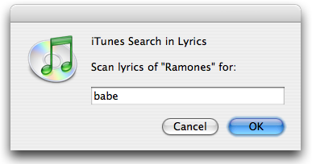

| Download |
In iTunes, you can't find all your songs whose lyrics contains "love". Lyrics are ignored by the Search field and by the Smart Playlists. This script brings this feature to iTunes, searching for words in songs' lyrics.
Select the desired playlist in iTunes and run this script.
Type the words you want to find and click on the OK button. Note that if two or more words are informed, they're searched as one sentence, not as individuals.

Wait a moment and the results will appear, under the new "Lyrics Search Results" playlist.